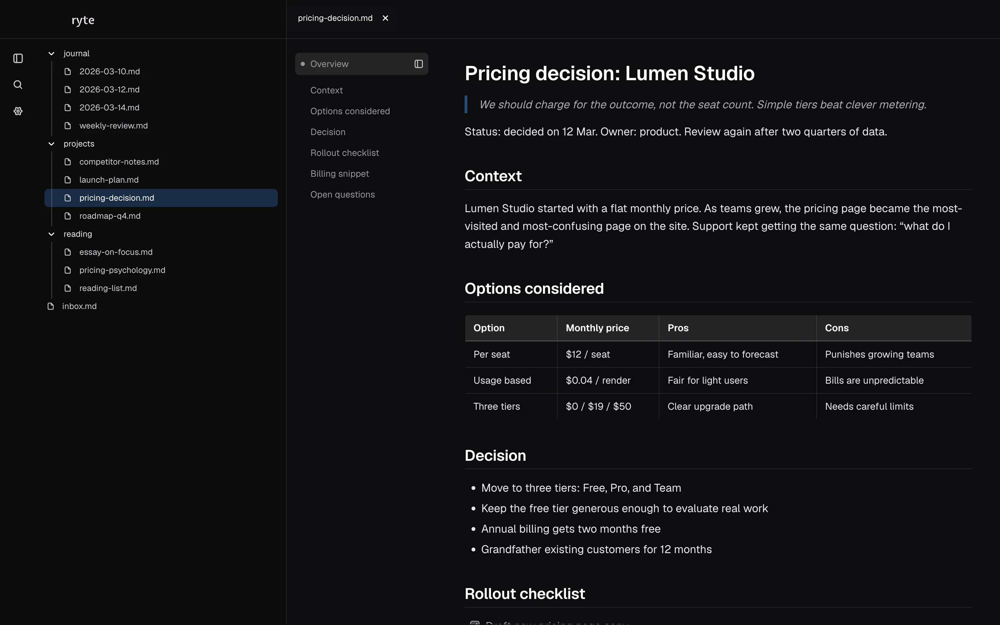

Free for Mac · Ryte 0.5
Stay on top of your agents.
Ryte is a free Markdown viewer for Mac that searches across all of your notes. Workstreams, a log of what your agents did, are in development.
Version 0.5.1 · Unsigned DMG
Installation help
·
What’s new
·
Roadmap
Search your notes. Read them well.
Ryte opens the folder you already have. It adds search and a calm reading view, and leaves your files alone.

-
Search every note
Keyword search runs on your Mac across the whole folder. No account and no key.
-
Markdown, rendered properly
Headings, tables, code and task lists, with a section outline for long notes.
-
Summaries when you want them
Add a ChatGPT or Claude key for cited summaries. Ryte sends your question and short excerpts, never whole notes.
Your notes stay on your Mac.
Ryte reads the folder you choose and keeps its search index locally. Nothing is sent anywhere unless you turn on summaries with your own key, which is stored in the macOS Keychain.
New in Ryte 0.5.1
All releases- Fixes the “Ryte is damaged” warning some Apple Silicon Macs showed when opening 0.5.0.
- A new design system under the hood, with consistent keyboard behavior in dialogs, menus, and tooltips.
- Still not notarized by Apple, so the install steps below still apply.
Install Ryte
Apple Silicon · macOS 12+
- Open the DMG and drag Ryte to Applications.
- Open Ryte. This build is unsigned and has not been notarized by Apple, so macOS may block the first launch.
- If it does, open System Settings → Privacy & Security and choose Open Anyway for Ryte.
Apple’s first-launch instructions
If macOS says Ryte is “damaged”, verify the download against its checksum and see the recovery steps.